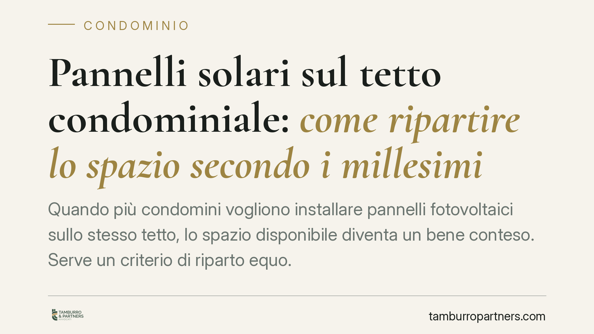

Pannelli solari sul tetto condominiale: come ripartire lo spazio secondo i millesimi
Quando più condomini vogliono installare pannelli fotovoltaici sullo stesso tetto, lo spazio disponibile diventa un bene conteso. Serve un criterio di riparto equo. La soluzione combina quote millesimali, esposizione solare e limiti tecnici della rete. Vediamo cosa dice il codice civile, quali maggioranze servono in assemblea e come muoversi senza aprire contenziosi.

Il problema: un tetto, più aspiranti
Il tetto e il lastrico solare sono, di regola, beni comuni (art. 1117 cod. civ.). Finché un solo condomino chiede di installare un impianto fotovoltaico, il conflitto non si pone. La questione nasce quando le richieste sono più d'una e lo spazio utile — quello ben esposto e tecnicamente idoneo — non basta per tutti.
In questi casi il tetto va trattato come una risorsa da distribuire. E la distribuzione richiede un criterio condiviso, deliberato dall'assemblea, che regga a un eventuale esame del giudice.
Inquadramento normativo
Due norme vanno tenute distinte, perché disciplinano cose diverse.
L'art. 1122-bis cod. civ. regola l'installazione del singolo condomino di impianti da fonti rinnovabili destinati al servizio della propria unità. Impone di dare preventiva notizia all'amministratore e riconosce all'assemblea il potere di prescrivere, per motivi di stabilità, sicurezza o decoro, modalità alternative di esecuzione o adeguate cautele. Questa norma, però, non detta un criterio di riparto dello spazio tra più condomini concorrenti.
Il criterio distributivo va cercato altrove. L'art. 1102 cod. civ. fissa il principio del pari uso: ciascun partecipante può servirsi della cosa comune purché non ne alteri la destinazione e non impedisca agli altri di farne analogo uso. Da qui deriva che nessuno può monopolizzare la porzione migliore del tetto. Quando l'uso è materialmente limitato, l'assemblea può disciplinarne il godimento — anche in modo turnario o proporzionale — con le maggioranze dell'art. 1136 cod. civ.
Sul piano dei quorum, l'organizzazione dell'uso di un bene comune richiede le maggioranze deliberative ordinarie dell'art. 1136, commi 2 e 3: in seconda convocazione, la maggioranza degli intervenuti che rappresenti almeno un terzo del valore dell'edificio. Se invece la delibera incide su modifiche sostanziali o su opere strutturali, operano i quorum rafforzati previsti dalla legge per quelle specifiche fattispecie. Va verificato caso per caso il contenuto effettivo della delibera.
Perché i soli millesimi non bastano
Il criterio millesimale è il punto di partenza naturale: a quota maggiore, spazio maggiore. Ma applicato da solo è iniquo.
Il tetto non è uniforme. Una falda esposta a sud produce molta più energia di una esposta a nord, a parità di superficie. Assegnare a un condomino una porzione ampia ma mal esposta significa dargli spazio che non rende. Per questo il riparto puramente millesimale va corretto con il parametro dell'esposizione e dell'irraggiamento, in modo che ciascuno riceva non tanti metri quadri astratti, quanto una capacità produttiva proporzionata alla propria quota.
È una logica di equità sostanziale, che l'assemblea può tradurre in una tabella tecnica redatta da un professionista.
I limiti tecnici che vincolano il riparto
Prima ancora di dividere, occorre sapere quanto si può dividere. Due vincoli sono decisivi:
- la capacità portante della copertura, da certificare da un tecnico abilitato: un tetto può non reggere il peso di impianti multipli;
- i limiti della rete e dei contatori, perché la potenza complessivamente installabile dipende anche dalle infrastrutture elettriche dell'edificio e dalle condizioni del distributore.
Uno studio tecnico preliminare evita di deliberare ripartizioni materialmente irrealizzabili.
Implicazioni pratiche
Per i condomini interessati, il messaggio è chiaro: non si procede "primo arrivato, primo servito". Chi occupa unilateralmente la falda migliore si espone a contestazioni e a ordini di rimozione.
Per l'amministratore, il compito è istruire la pratica: raccogliere le richieste, commissionare le verifiche tecniche e portare in assemblea una proposta di riparto motivata. Una delibera fondata su parametri oggettivi — millesimi, esposizione, capienza tecnica — è molto più solida di un'assegnazione discrezionale.
Cosa fare in concreto
- Mappate il tetto con un tecnico abilitato: superficie utile, esposizione delle falde, irraggiamento e capacità portante certificata.
- Verificate i limiti elettrici interpellando il distributore sulla potenza complessiva installabile e sulla capienza di rete e contatori.
- Costruite una tabella di riparto che parta dai millesimi e la corregga con il coefficiente di esposizione, così da distribuire capacità produttiva e non solo metri quadri.
- Portate la proposta in assemblea verificando il quorum applicabile ex art. 1136 in base al contenuto effettivo della delibera.
- Mettete a verbale criteri e vincoli tecnici: una delibera motivata su dati oggettivi riduce il rischio di impugnazione.
La materia è recente e in evoluzione. Prima di deliberare, consigliamo di far esaminare il caso concreto, perché le soluzioni standard raramente si adattano a tetti e condomini reali.
---
*Contributo informativo a cura di Tamburro & Partners - Avv. Giuseppe Tamburro. Non costituisce parere legale.*
Ogni condominio ha una storia a sé.
Se gestisci un'amministrazione e vuoi un confronto su una specifica questione condominiale, scrivi allo studio. Ti rispondiamo entro un giorno lavorativo.